A SPARK OF WHIMSY
Not all magic is meant for grand battles, ancient prophecies, or dark curses. The wizarding world is equally defined by its brilliant eccentricities and its sense of humor. In the darkest of times, it is often the brightest, most absurd magical inventions that provide the necessary light.
No one embodied this spirit more fiercely than Fred and George Weasley, whose legendary joke shop at Number 93, Diagon Alley, revolutionized comedic magic. Alongside their brilliant creations, the wizarding world is filled with curious everyday miscellany—sentient chess pieces, broadcasting radios, and enchanted coins—that prove magic is woven into the very fabric of daily life.
I. WEASLEYS' WIZARD WHEEZES
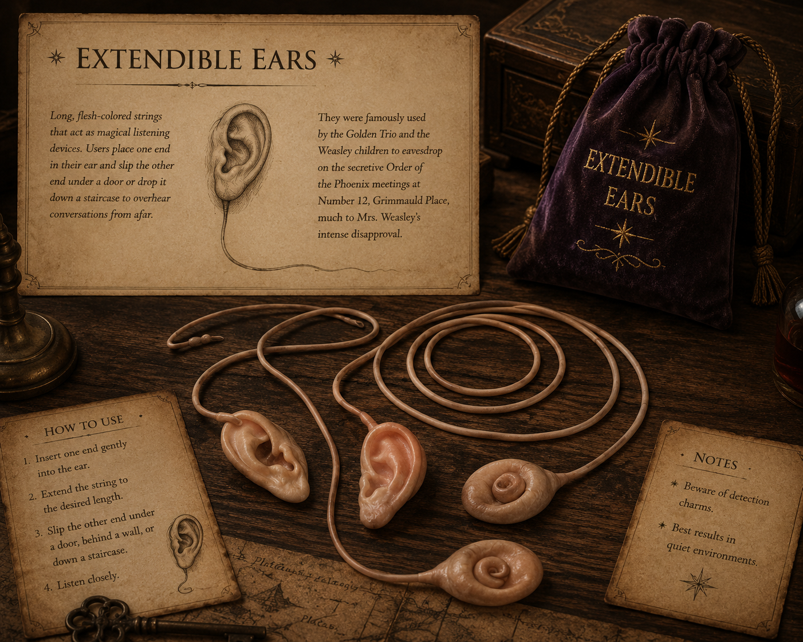
EXTENDABLE EARS
Long, flesh-colored strings that act as magical listening devices. Users place one end in their ear and slip the other end under a door or drop it down a staircase to overhear conversations from afar.
They were famously used by the Golden Trio and the Weasley children to eavesdrop on the secretive Order of the Phoenix meetings at Number 12, Grimmauld Place, much to Mrs. Weasley's intense disapproval.
DECOY DETONATORS
Small, black, horn-shaped objects that possess a frantic mind of their own. When dropped, they scurry away from the user on little legs to a discreet distance before creating a loud bang and a massive cloud of black smoke.
They are an exceptional tool for creating diversions. Harry Potter utilized one to excellent effect during his infiltration of the Ministry of Magic in order to slip into Dolores Umbridge's office unnoticed.
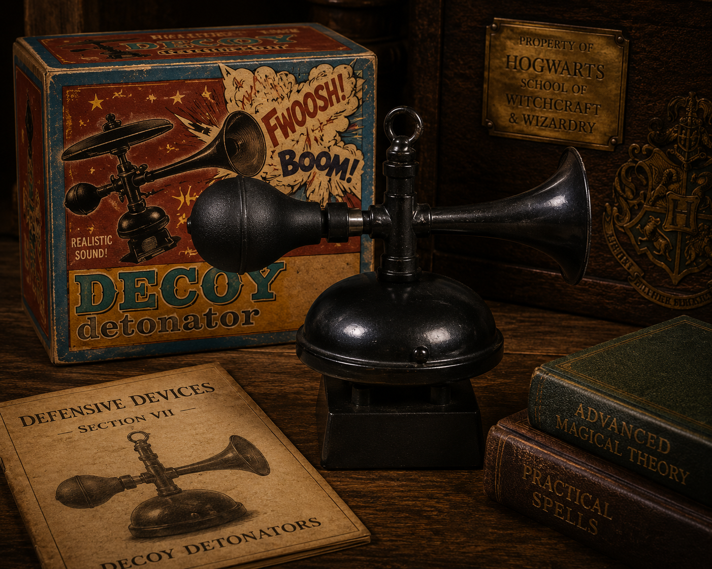
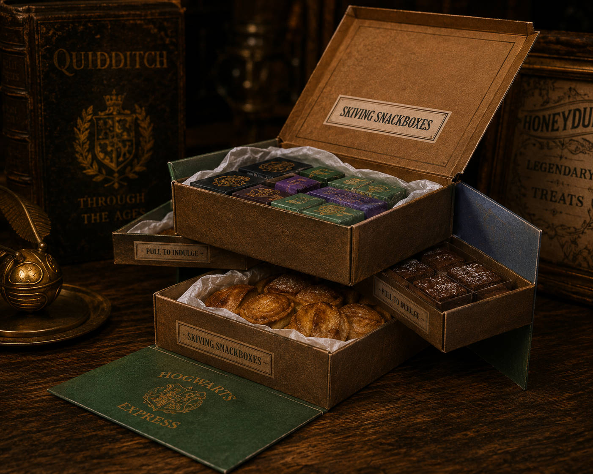
SKIVING SNACKBOXES
A brilliantly devious range of sweets designed to make the eater temporarily ill, allowing them to skip unwanted classes. The sweets are color-coded: one half induces the illness, and the other half instantly cures it.
Products include Puking Pastilles, Fainting Fancies, Nosebleed Nougat, and Fever Fudge. They were extensively—and agonizingly—tested by Fred and George on themselves before going to market.
PORTABLE SWAMP
A phenomenal display of complex spellwork contained within a simple package. When deployed, it instantaneously transforms a large area of floor space into a deep, muddy, malodorous swamp.
Fred and George unleashed one in a Hogwarts corridor as their parting gift to Dolores Umbridge. Professor Flitwick eventually cleared it away, but deliberately left a small patch roped off because he considered it a "really good bit of magic."
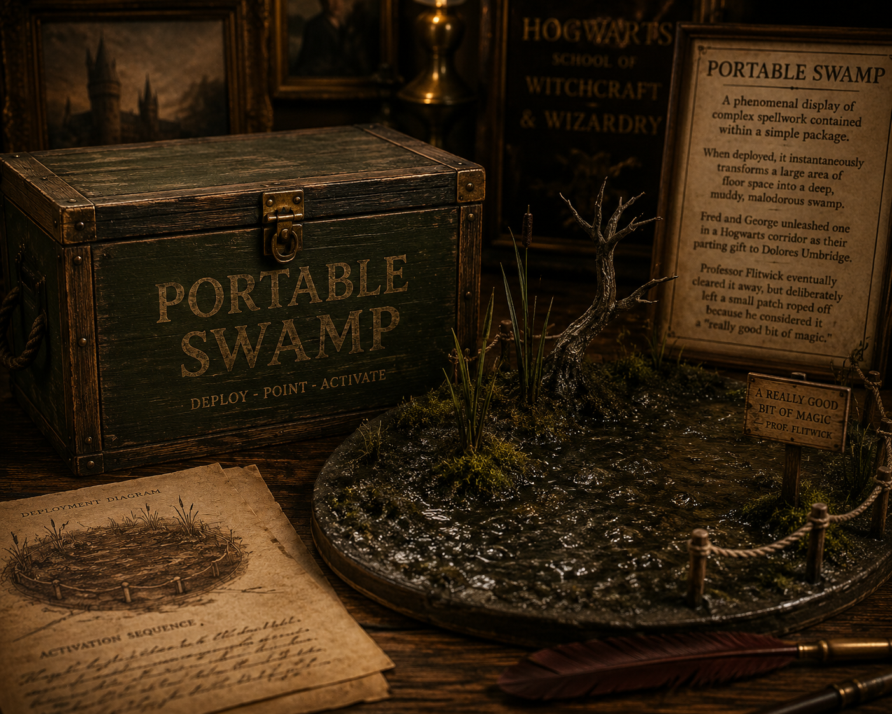
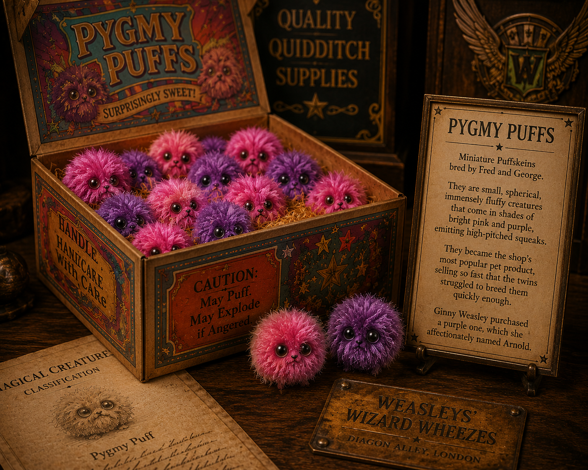
PYGMY PUFFS
Miniature Puffskeins bred by Fred and George. They are small, spherical, immensely fluffy creatures that come in shades of bright pink and purple, emitting high-pitched squeaks.
They became the shop's most popular pet product, selling so fast that the twins struggled to breed them quickly enough. Ginny Weasley purchased a purple one, which she affectionately named Arnold.
U-NO-POO
A brilliantly marketed prank product that causes extreme constipation in the consumer. Its fame primarily stems from the audacious advertising campaign the twins ran during the height of the Second Wizarding War.
With Voldemort's return public, the twins plastered their shop window with the glowing slogan: *"Why are you worrying about You-Know-Who? You should be worrying about U-No-Poo—the constipation sensation that's gripping the nation!"*
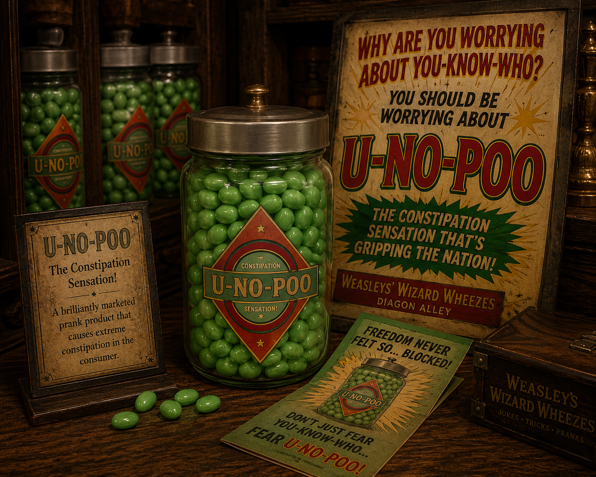
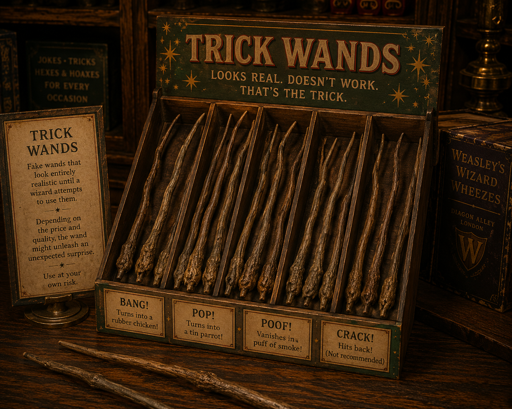
TRICK WANDS
Fake wands that look entirely realistic until a wizard attempts to use them. Depending on the price and quality, the wand might emit a loud bang and turn into a rubber chicken, a tin parrot, or a pair of underpants.
The more expensive varieties were enchanted to beat the user over the head. They were a staple prank item that showcased the twins' incredibly deft understanding of basic transfiguration and charms.
PERUVIAN INSTANT DARKNESS POWDER
A rare, imported magical substance sold by Weasleys' Wizard Wheezes. When thrown into the air, it creates an impenetrable pitch-black darkness that cannot be penetrated by normal light, nor by the standard *Lumos* charm.
While intended for quick escapes, it was notably misused by Draco Malfoy to smuggle Death Eaters past the D.A. members guarding the Room of Requirement during the Battle of the Astronomy Tower.
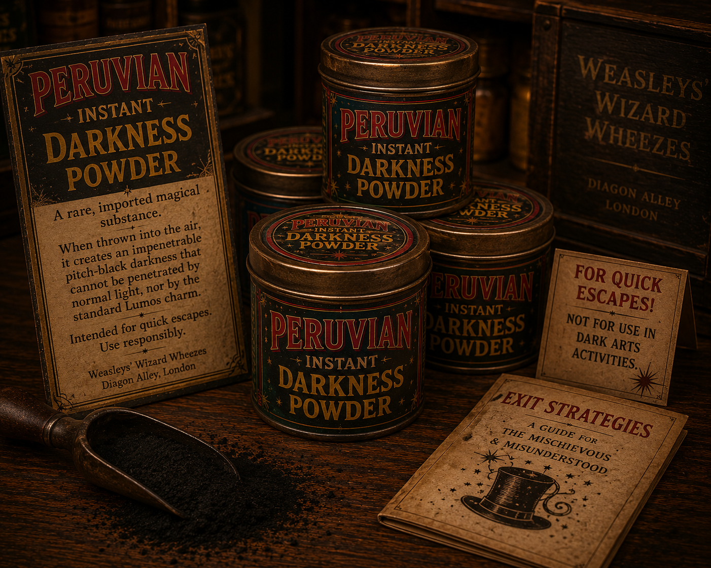
II. MISCELLANEOUS MAGIC
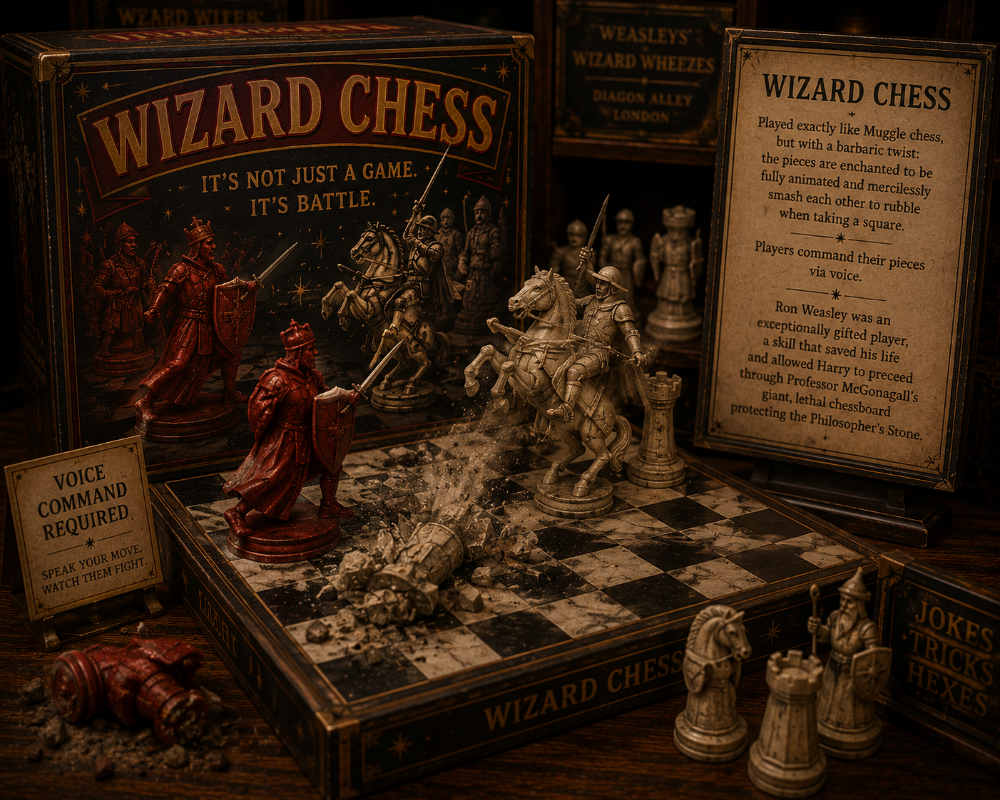
WIZARD CHESS
Played exactly like Muggle chess, but with a barbaric twist: the pieces are enchanted to be fully animated and mercilessly smash each other to rubble when taking a square.
Players command their pieces via voice. Ron Weasley was an exceptionally gifted player, a skill that saved his life and allowed Harry to proceed through Professor McGonagall's giant, lethal chessboard protecting the Philosopher's Stone.
EXPLODING SNAP
A wildly popular, fast-paced card game among Hogwarts students. The rules are similar to the Muggle game of Snap, but the magical cards have a tendency to spontaneously explode during gameplay, often singeing the players' eyebrows.
The game requires intense concentration, quick reflexes, and a high tolerance for minor burns, making it a chaotic favorite in the Gryffindor common room.
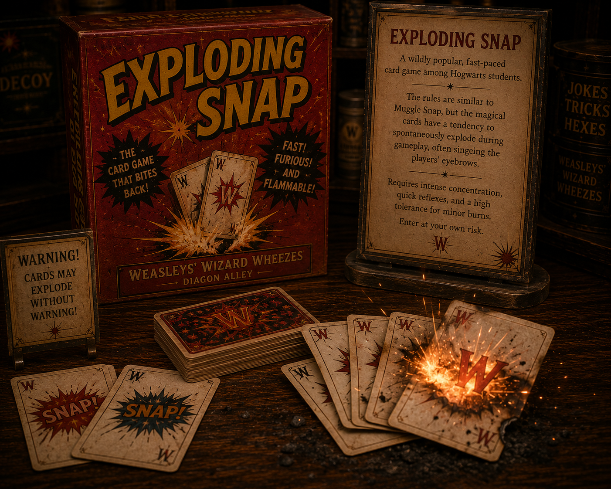
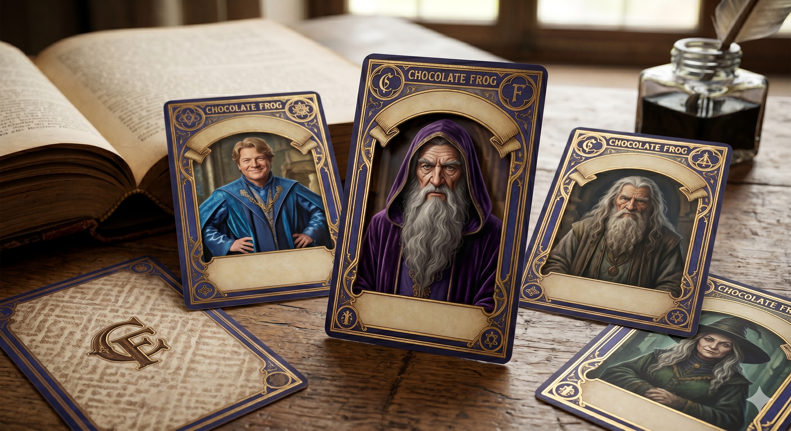
CHOCOLATE FROG CARDS
Included with every Chocolate Frog confection is a pentagonal collectible card featuring a famous witch or wizard. Like portraits, the subjects in the cards can move around, disappear into other cards, and refuse to sit still for long.
Collecting and trading these cards is a rite of passage for young witches and wizards. Harry's very first card on the Hogwarts Express was Albus Dumbledore, which inadvertently provided a vital clue about Nicolas Flamel.
MAGICAL CLOCKS
Instead of telling the time, complex magical clocks tell the status and location of family members. The most famous example is the Weasley family clock at the Burrow.
It possesses nine hands, one for each family member, and instead of numbers, its face features locations and statuses like "Home," "School," "Work," "Traveling," "Lost," "Hospital," "Prison," and at the very top, "Mortal Peril."
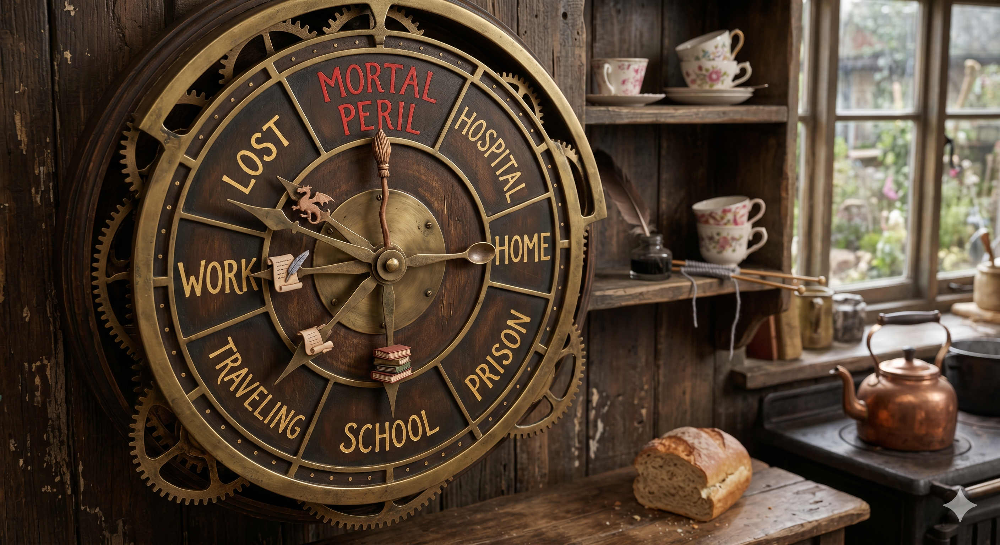
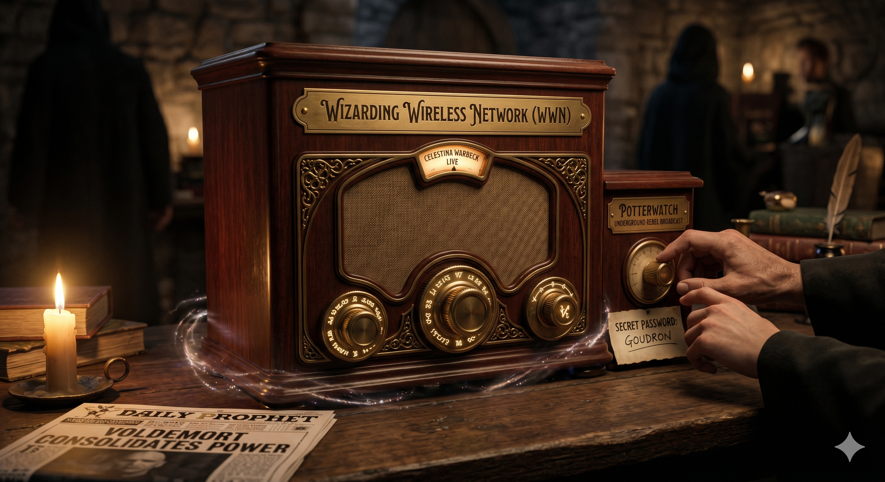
WIZARDING RADIOS
Vintage-looking wireless wooden cabinets that tune into magical broadcasts without the need for electricity. They feature popular networks like the Wizarding Wireless Network (WWN), broadcasting music like Celestina Warbeck.
During the height of Voldemort's regime, radios were the only safe way to receive truthful news. The underground rebel broadcast "Potterwatch" required a constantly changing password to tune into.
FLOATING CANDLES
Thousands of wax candles enchanted to hover in mid-air without dripping hot wax on the people below. They provide the warm, ambient illumination in the Great Hall at Hogwarts.
While a relatively simple charm, casting it on thousands of candles simultaneously and tying them to the enchanted ceiling above represents a marvel of atmospheric magical engineering.
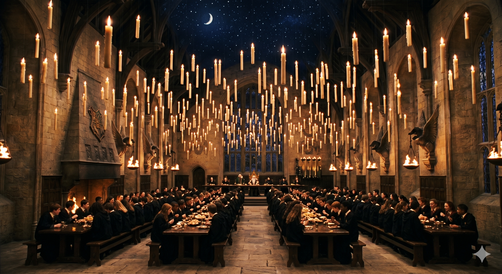

ENCHANTED COINS
Fake Galleons brilliantly charmed by Hermione Granger using a Protean Charm to communicate meeting times for Dumbledore's Army. The serial numbers on the coins were enchanted to change and grow hot when Harry altered the master coin.
This method of secure, untraceable communication was incredibly advanced for a fifth-year student, directly inspired by the Dark Mark used by Voldemort's Death Eaters.
SPECTRESPECS
Outrageously colorful, large spectacles given away for free in issues of *The Quibbler*. According to Xenophilius Lovegood, they allow the wearer to see Wrackspurts—invisible creatures that float in through your ears and make your brain go fuzzy.
While considered eccentric nonsense by most, Luna Lovegood successfully used a pair to spot Harry Potter lying paralyzed and invisible under his cloak on the Hogwarts Express.